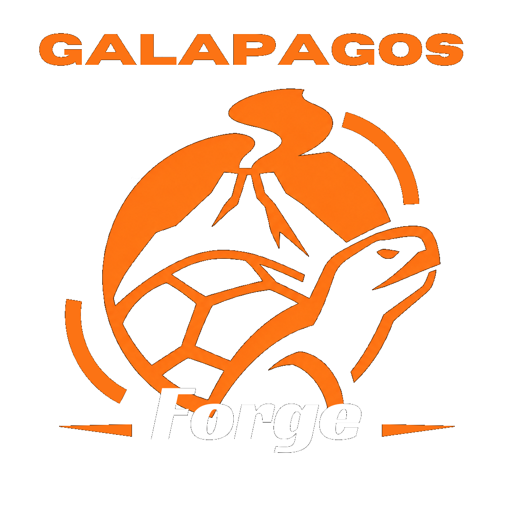

Sobre a Galapagos Forge
A Galapagos Forge é uma empresa fictícia de desenvolvimento de videogames criada com a proposta de imaginar mundos diferentes e transformar ideias em aventuras interativas.
O nome combina a referência às ilhas Galápagos, conhecidas por sua natureza e diversidade, com a palavra inglesa “Forge”, que significa “forja”. A ideia é representar a criação de novos mundos e experiências.
Nosso objetivo é pensar em jogos que misturem exploração, histórias interessantes e liberdade para o jogador descobrir seu próprio caminho.

Missão
Criar experiências divertidas e criativas por meio dos videogames.
Visão
Construir uma identidade reconhecida pela imaginação e pela qualidade das ideias.
Valores
Criatividade, colaboração, curiosidade e respeito aos jogadores.